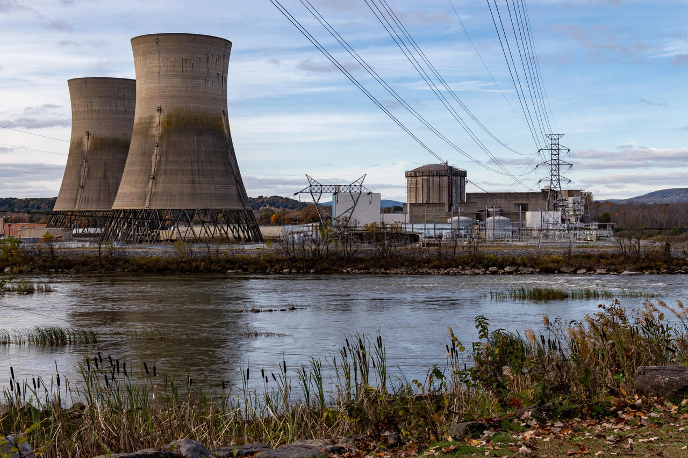

Three Mile Island accident

The Three Mile Island accident was a partial meltdown of reactor Unit 2 at the Three Mile Island Nuclear Generating Station in Pennsylvania, United States, on 28 March 1979. It remains the most serious accident in US commercial nuclear power history.
Although the radioactive release was small and no deaths or injuries were attributed to it, the accident terrified the public, exposed deep flaws in reactor operation and regulation, and effectively ended the growth of the American nuclear industry for a generation.
What happened
A minor fault in the secondary cooling system led the reactor to shut down automatically; a relief valve then opened as designed but stuck open, draining coolant, while instruments in the control room misleadingly suggested the core was covered. Operators, trained to fear overfilling, cut emergency cooling while the core was actually boiling dry. Over hours, roughly half the core melted before the situation was understood and stabilised.
A bubble of hydrogen gas in the vessel raised fears of explosion that proved unfounded; a small quantity of radioactive gas was vented. Pennsylvania's governor advised pregnant women and young children within five miles to leave, and many thousands more evacuated spontaneously.
Aftermath
The Kemeny Commission blamed operators, management, training and the regulator together: 'people-related problems' more than equipment. Reforms professionalised operator training (through the industry institute INPO), improved control-room design and emergency planning, and hardened the Nuclear Regulatory Commission. Combined with economics and the later shock of Chernobyl, the accident froze US reactor orders; the damaged unit's defuelling and cleanup took until 1993. See Nuclear power and Fukushima nuclear accident.
See also: Nuclear power · Fukushima nuclear accident · Environmental disaster · Chernobyl disaster